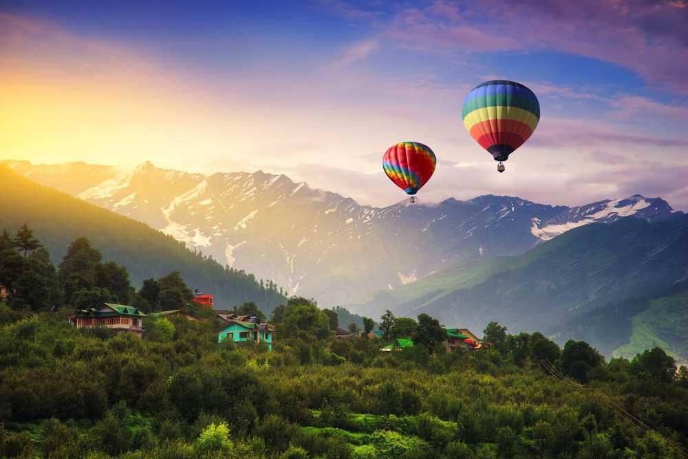
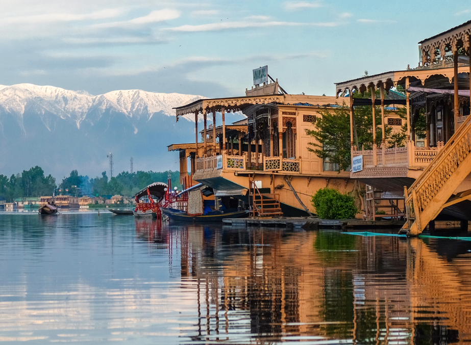
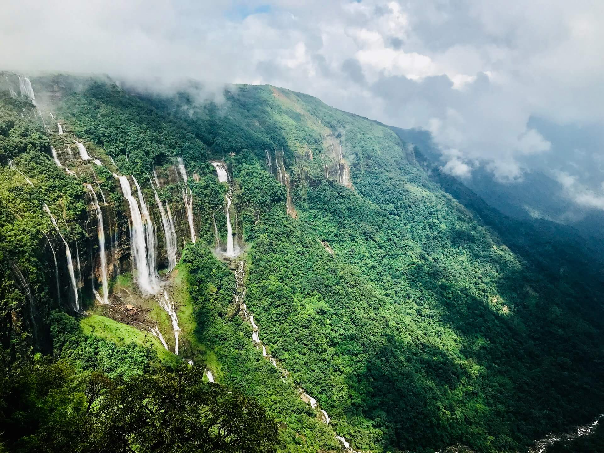
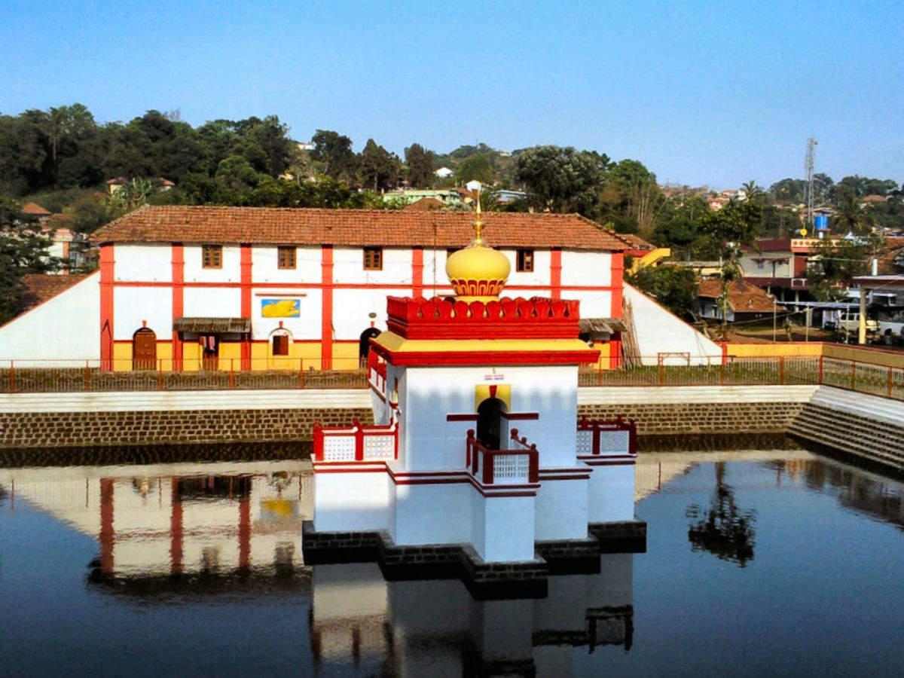
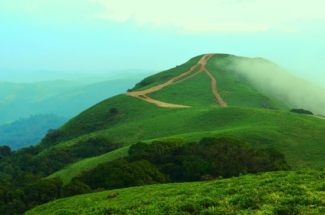
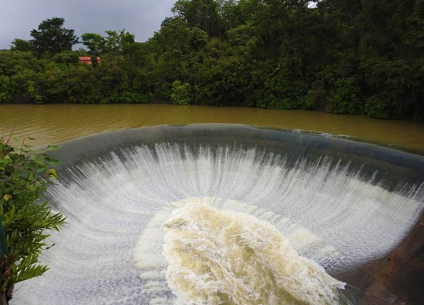
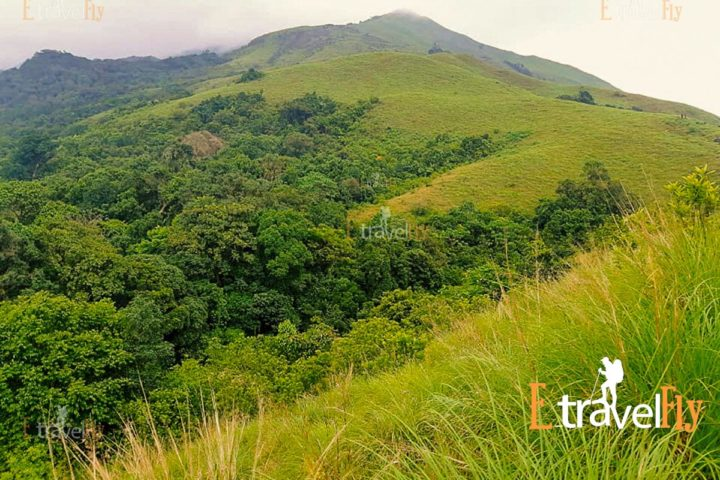
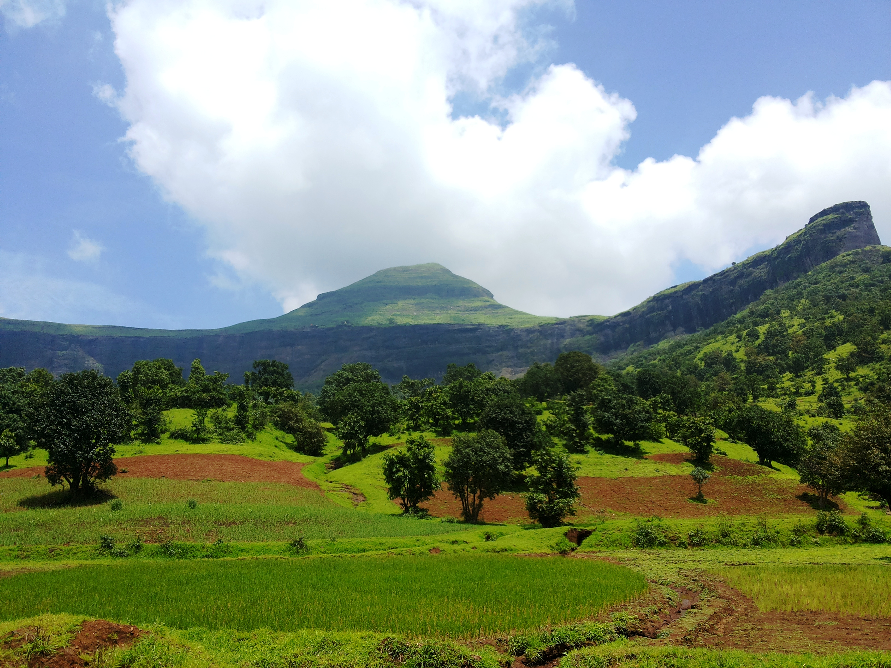
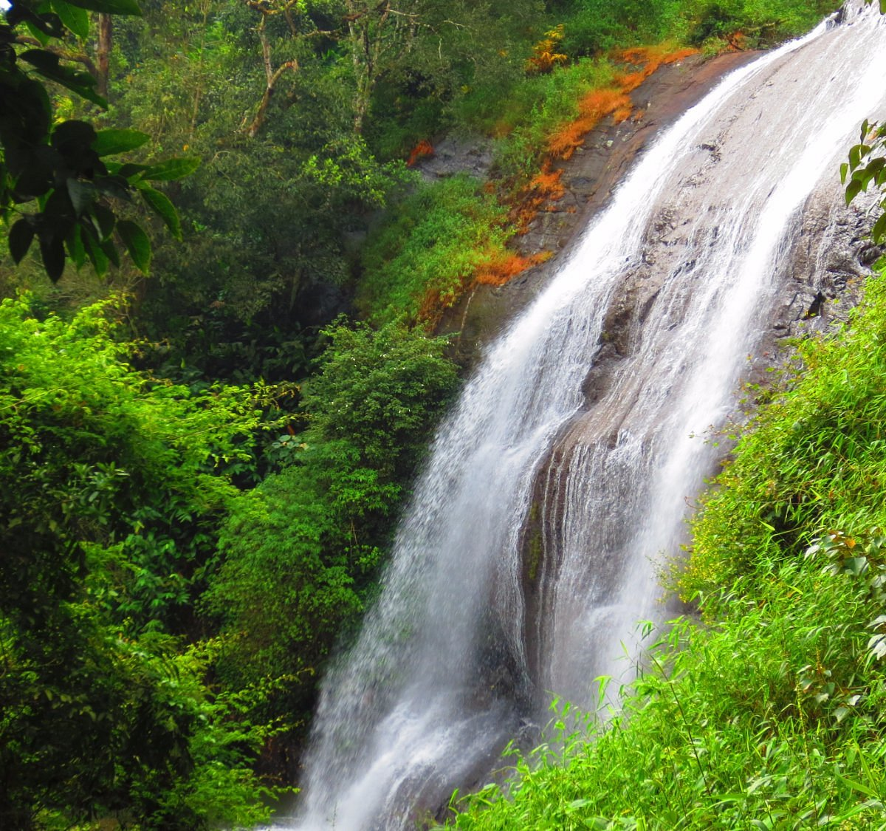
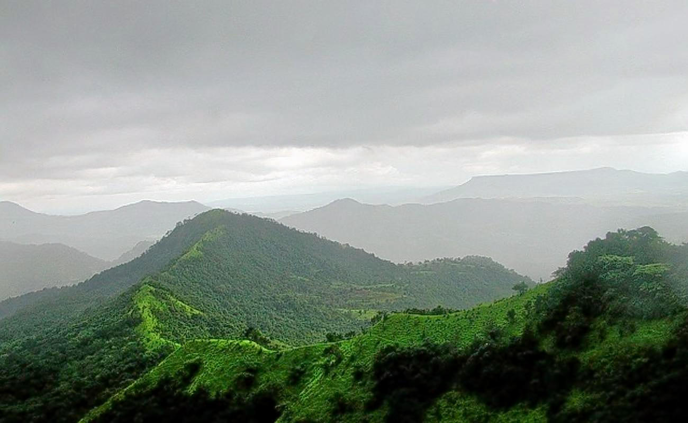

Manali is a popular hill station in Himachal Pradesh, India, known for its scenic beauty and
adventure activities. Five
key points about Manali include: its stunning natural landscapes,
including the Beas River, Solang
Valley, and Rohtang
Pass;
1. Natural Beauty:
Manali is blessed with breathtaking scenery. The Beas River flows through the town, providing
opportunities for
riverside walks and adventure sports.
2. Cultural Significance:
The Hadimba Devi Temple, dedicated to the deity Hadimba, is a unique wooden structure and a
major
landmark. The Manu
Temple, dedicated to the sage Manu, is located in Old Manali and
is a place of pilgrimage.
3. Adventure Capital:
Solang Valley is a major draw for adventure enthusiasts, offering activities like skiing in winter
and paragliding,
zorbing, and quad biking in summer.
4. Climate:
Manali enjoys a pleasant climate, making it a popular destination year-round. Summers
(March to
June) are mild and ideal
for sightseeing, while winters (October to February) bring
snowfall, attracting skiers and
snowboarders.
5. Gateway to Other Destinations:
Manali serves as a base for exploring other nearby attractions. Kasol and Manikaran, famous
for
their hot springs and scenic beauty, are also accessible from
Manali.

Srinagar, the summer capital of Jammu & Kashmir, is known for its stunning natural beauty, Mughal
gardens, and serene
lakes. Key points include Dal Lake, a major attraction with houseboats and shikara rides; the Mughal
Gardens like
Shalimar Bagh and Nishat Bagh, showcasing intricate terraced landscapes; Shankaracharya Temple, offering
panoramic views
from its hilltop location; Indira Gandhi Tulip Garden, a vibrant display of colorful tulips; and the
historic Hazratbal
Shrine, a revered Muslim shrine on the banks of Dal Lake.
1. Dal Lake:
Srinagar's iconic Dal Lake is a major tourist destination, featuring houseboats, shikara rides, and a
floating market.
2. Mughal Gardens:
The city boasts exquisite Mughal gardens like Shalimar Bagh, Nishat Bagh, and Chashme Shahi, showcasing
intricate
designs and terraced landscapes.
3. Shankaracharya Temple:
Perched atop Shankaracharya Hill, this ancient temple offers breathtaking views of Srinagar and the
surrounding valley.
4. Indira Gandhi Memorial Tulip Garden:
A stunning spectacle of colorful tulips during the spring season, attracting visitors from around the
world.
5. Hazratbal Shrine:
A revered Muslim shrine located on the banks of Dal Lake, known for its serene atmosphere and historical
significance.

Shillong, also known as the "Scotland of the East," is a popular hill station and the capital of
Meghalaya, India. It's
known for its natural beauty, pleasant climate, and rich cultural heritage.
1. Natural Beauty:
Shillong is blessed with stunning landscapes, including the serene Umiam Lake, a man-made
reservoir
offering boating and
picnicking opportunities. Other notable natural attractions include
Elephant Falls, Sweet Falls, and
the Laitlum
Canyons, which provide panoramic views.
2. Cultural Hub:
Shillong is the cultural and administrative center of Meghalaya, with a vibrant local life centered
around Police Bazar.
The city also houses the Don Bosco Museum, showcasing the rich cultural
heritage of the region.
3. Historical Significance:
Shillong served as the capital of Assam until 1972 before becoming the capital of Meghalaya,
according to the Department
of Education, Meghalaya. The city was established by the British
in 1864, according to SHILLONG
CANTONMENT BOARD.
4. Pleasant Climate:
Shillong boasts a cool and pleasant climate throughout the year, making it a popular destination
for
tourists seeking
respite from the heat.
5. Educational and Research Center:
Shillong has a number of educational and research institutions, including those focused on
dairy
farming, fruit
production, and silk production.

The Omkareshwara Temple in Madikeri, Coorg, is a unique temple known for its distinct architectural
style, blending
Islamic, Gothic, and traditional Hindu elements. It features a central dome and four minarets, unlike
typical Hindu
temples, and was built by King Lingarajendra II in the early 19th century.
1. Unique Architecture:
The temple's design is a fusion of Islamic, Gothic, and Hindu styles. It has a central dome and four
minarets,
resembling a mosque, which is unusual for a Hindu temple.
2. Built by King Lingarajendra II:
The temple was constructed in the early 1820s by King Lingarajendra II as an act of penance to atone for
the sin of
killing a Brahmin.
3. Legend and History:
The king is said to have brought a Shiva Linga from Kashi (Varanasi) and installed it in the temple. The
temple's
construction was intended to relieve the king from the guilt and nightmares he experienced after the
Brahmin's
death.
4. Water Tank and Fish:
A prominent feature is the water tank in front of the temple, filled with various types of fish.
5. Location:
The temple is located in Madikeri, the capital of Coorg, Karnataka, making it a significant religious
and tourist
destination.

Mandalpatti, a popular viewpoint in Coorg, offers stunning natural beauty and a serene atmosphere.
It's known for its
lush greenery, cool breeze, and panoramic views of the surrounding hills and
valleys. Visitors can
enjoy jeep rides,
trekking, and peaceful moments surrounded by nature.
1. Scenic Views:
Mandalpatti is famous for its breathtaking panoramic views of the surrounding hills, valleys,
and
coffee plantations.
The viewpoint offers a wide-angle perspective of the landscape, making
it a popular spot for
photography and nature
lovers.
2. Jeep Safari and Trekking:
Visitors can enjoy a jeep ride through the forest roads to reach a certain point, followed by a trek
to
the summit. The
final 3 kilometers to the peak are typically accessed by jeep or trekking,
as private vehicles are
not allowed.
3. Serenity and Seclusion:
Mandalpatti provides a peaceful and secluded escape from the hustle and bustle of city life.The
area
offers a tranquil
environment, perfect for those seeking relaxation and a connection with nature.
4. Best Time to Visit:
The ideal time to visit Mandalpatti is during the summer months (March to June) when the
weather is
pleasant and the
cool breeze is refreshing.
5. Tips for Visitors:
It's recommended to wear comfortable shoes for trekking and carry essentials like water and
light
snacks. Jeep safaris
should be booked in advance, especially during peak season.

Chiklihole Dam, located near Nanjarayapattana in Coorg, Karnataka, is a popular tourist destination
known for its unique
circular design and scenic beauty. It was built in 1985 to provide irrigation to local settlements and
offers a tranquil
escape with lush greenery and opportunities for photography.
1. Unique Architecture:
The dam has a distinctive circular shape with no crest gates. The water overflows like foam over the
curved structure
when the water level rises, creating a visually stunning spectacle according to Trawell.in.
2. Scenic Beauty and Tranquility:
The dam is surrounded by lush greenery and offers a peaceful and refreshing environment, making it ideal
for nature
lovers and those seeking a quiet getaway.
3. Irrigation Reservoir:
The dam was constructed to provide water for irrigation to the surrounding areas, serving 865 hectares
of land.
4. Best Time to Visit:
The monsoon and winter seasons (June to March) are the ideal times to visit, as the weather is pleasant
and the water
levels are higher.
5. Picnic Spot:
The dam's natural beauty and serene atmosphere make it a popular spot for picnics, especially during the
sunset.

Pushpagiri Wildlife Sanctuary, located in Coorg, Karnataka, is notable for its diverse wildlife,
including endangered
species, and its rugged terrain with steep hills and deep valleys. It's a popular
destination for
trekking, particularly
to Kumara Parvatha, and is known for its rich biodiversity,
including unique birdlife.
1. Biodiversity Hotspot:
The sanctuary is part of the Western Ghats, a biodiversity hotspot, and is known for its rich
flora
and fauna.
2. Trekking Destination:
It's a popular spot for trekking, with Kumara Parvatha, the second-highest peak in Coorg,
located
within the
sanctuary.
3. Endangered Species:
The sanctuary is home to several endangered species, including the Malabar Giant Squirrel and
birds
like the Nilgiri
Flycatcher.
4. Diverse Habitats:
It features a variety of habitats, including evergreen and semi-evergreen forests, and shola
grasslands.
5. Conservation Significance:
Pushpagiri Wildlife Sanctuary plays a vital role in preserving watersheds of important rivers in
the
region and is
considered a significant conservation site.

Brahmagiri Peak, located on the border of Karnataka and Kerala in the Western Ghats, is a popular
trekking destination
known for its scenic beauty, wildlife, and religious significance.
1. Trekking Destination:
Brahmagiri is a well-known trekking spot, offering a challenging yet rewarding experience for both
experienced and
novice trekkers. The trek typically takes 3-4 hours to reach the summit at 1608 meters.
2. Wildlife Sanctuary:
The peak is part of the Brahmagiri Wildlife Sanctuary, home to a variety of animals, including
elephants, leopards, and
various bird species. Visitors should be aware of wildlife and take necessary precautions.
3. Scenic Beauty:
The trek offers stunning views of the lush green forests, valleys, and rolling hills of the Western
Ghats. The panoramic
views from the summit are particularly breathtaking.
4. Religious Significance:
The trek passes by Thirunelli Temple, an ancient temple dedicated to Lord Vishnu, adding a spiritual
dimension to the
experience.
5. Best Time to Visit:
The best time to trek Brahmagiri is from October to May, with the monsoon season (June to September)
potentially
bringing heavy rains and making the trail slippery and leech-prone.

Chelavara Falls, located in Coorg, Karnataka, is a serene and picturesque waterfall known for its
milky white water and
the unique tortoise-like shape of the rock formation it flows over. It's a
popular destination for
nature lovers and
those seeking a peaceful retreat, though swimming is not
advised due to the depth and unpredictable
rock formations at
the base.
1. Serene Location:
The falls are situated in a tranquil environment, offering a peaceful escape amidst lush greenery
and coffee
plantations.
2. Unique Rock Formation:
The water cascades over a rock formation that is said to resemble a tortoise, giving it a unique
visual appeal.
3. Monsoon Season:
The falls are at their most spectacular during the monsoon season, from June to September, when
the
water flow is
heavy.
4. Safety Precautions:
Despite its beauty, Chelavara Falls is known to be dangerous. Swimming is not recommended due
to the
depth and
unpredictable rock formations, and locals advise against going near the water.
5. Trekking Opportunities:
The surrounding area offers various trekking trails, allowing visitors to explore the diverse flora
and fauna of the
region and reach viewpoints.

Kote Betta, also known as "Fort Hill," is a prominent peak in Coorg, Karnataka, offering scenic beauty,
moderate
trekking trails, and spiritual significance. It's known for its panoramic views, biodiversity, and
ancient temple at the
summit. The trek to the peak is popular with both beginners and experienced trekkers.
1. Scenic Beauty and Panoramic Views:
Kote Betta is renowned for its stunning natural beauty, with lush green landscapes, rolling hills, and
valleys. The trek
provides breathtaking views of the surrounding Western Ghats.
2. Moderate Trekking Trails:
The ascent to Kote Betta involves a moderate trek through scenic trails, making it accessible to both
beginners and
experienced trekkers.
3. Spiritual Significance:
The peak is home to an ancient temple dedicated to Lord Shiva, attracting devotees and trekkers
alike.
4. Biodiversity and Wildlife:
The forests surrounding Kote Betta are rich in biodiversity, with various species of birds, butterflies,
and
wildflowers.
5. Adventure and Photography Opportunities:
The trek, with its rocky patches and steep slopes, offers an element of adventure. It's also a great
place for
photography, capturing the scenic landscapes and wildlife.